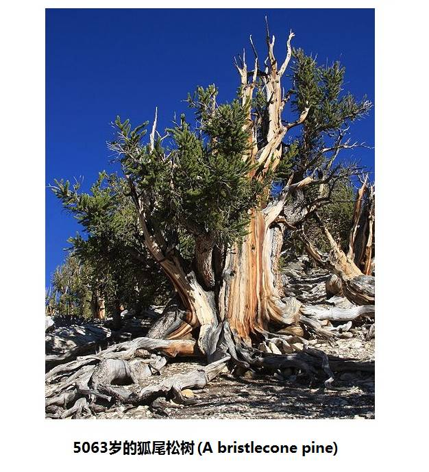

|
回主页
第四节 谁是亚洲人、欧洲人的祖先
第1小节 现代人类学确定年代的方法
在讨论欧洲人和亚洲人的祖先之前，很有必要介绍现代人类学确定年代的一些方法。
一．分子人类学推断年代的不准确性
在前面几节中所讲到的亚当理论和夏娃理论，以及由这两个理论延伸的千年追寻，都是从现代人DNA追溯以往的祖先。这种追寻和亲子鉴定的原理很相像，在血统方面，是准确无误的。然而，无论是从线粒体DNA上的追寻,还是由Y染色体上的追寻，由于DNA突变是随机的，突变率是非恒定的，因此，在祖先产生年代的判定上，不是很准确。对于年代的确定，大都需要依靠考古的年代断定方式来确定。
1.线粒体DNA单倍群产生年代的推算
比较起来，线粒体DNA的年代推算比Y染色体年代的推算，准确性相对要好一些。
由线粒体DNA突变来推求年代，关键在于确定突变的速率。客观地讲，目前的突变率都是估算的，不同研究提供的数字，有相当大的差异。而且，过去历史上单倍群的突变率，显然也不是固定的。
估计线粒体DNA突变率的简单方法，是“看两个分开已知年代的群体各自积累了多少突变”（"You can see how
many mutations have accumulated in two different groups that have been
separated for a known length of time"）。例如：研究发现在大约1.5万年前，有几小群人跨过西伯利亚的白令海峡到了美洲[参看第5节内容]。他们的后代是仍然生活在美洲的印第安原住民。这些原住民的线粒体DNA中，包含一个命名为C1b的单倍群。而在西伯利亚的现代人中，有C1a单倍群的人群。C1a与C1b有共同的母系单倍群C1。由于在美洲没有发现含C1a单倍群的族群，C1a仅存在于西伯利亚的原住民中。而在西伯利亚的原住民中又没有发现C1b，因此可以断定C1b是在人群进入美洲后才产生的。C1a的子孙和C1b的子孙已经分离大约1.5万年了。在他们两个系统的后裔中，他们的子孙共发生了8到9个突变点，每条继承线上平均为4到4.5个突变点。因此，可以算出平均每发生一个突变点的时间是3,750年到3,333年。
非洲原住民和美洲原住民之间，线粒体DNA突变点的积累数大约是115个点[注释 1]，平均每条线上是57.5个点。按上述的突变率来估算，线粒体夏娃的生活年代在21.6万年到19.1万年以前，近似为20万年前（参看第2节 图2-14）。
2.Y染色体DNA研究的年代推算方法
从前面一节我们看到，Y染色体亚当理论，在断定血统方面的优势，是化石考古所不能比拟的。但是，在确定古人的年代方面，却存在着劣势。正如在亲属鉴定上，可以查出200年前杰斐逊的私生子，但并不能从DNA上确定他的出生日期。
Y染色体亚当到底生活在多少年前，在过去的研究中，提出的一些年代差别很大。其中被引用最多的是生活在5.9万年以前，这个显然有错误的年代，是分子人类学家斯宾塞.韦尔斯(Spencer
Wells)，在他的著作“出非洲记，人类祖先的迁徙史诗”[注释 2]一书中提出的。这个数据是引用包含他署名的研究报告“Y染色体序列变异和人类群体的历史” [注释 3]中的结果。但是，他并没有说清楚。原报告的内容是，"the age of the most
recent common ancestor was previously estimated at 59,000 years, with a 95%
probability interval of 40,000–140,000 years"。注意这里的“95%的可能在4到14万年”。在此之前有估计为27万年（"A
coalescence model predicts an expected time to a most recent common
ancestral male lineage of 270,000 years."）[注释 4]，在之后又有15万年（参看图2-5 人类的父系树图谱）。为什么会有这大差异呢？
在原理上，Y染色体DNA年代推算是和线粒体DNA年代推算一致的：“看两个分开年代已知的群体各自积累了多少突变”。但是，线粒体DNA只有16,569个碱基字符，而Y染色体非重组区，却有四千多万个碱基字符，这当然要复杂多了。
有一个比较通常用到的计算公式是: t = -Ne ln(1-V/Ne
μ) [注释5]
公式中各项：有效群体大小（Ne），标记的突变速率（μ），群体中积累的突变数目（V）。t 是距今多少代，以每代20年计算，t乘以20，就是距今多少年。ln是自然对数符号。
例如：以中国汉族祖先M122的产生年代计算，Ne确定为750- 2,000；μ确定为0.18%；20年为一代。计算得出M122产生的时间是：距今18,000-60,000年。（该文中没有给出V的数值）。
可以看出计算结果的误差范围是很大的。而且仅仅是标记的突变速率（μ），不同的研究者提供的数据，相差就达到上十倍[注释6]。
由此看来，由Y染色体DNA推断出来的年代，只能作为参考。在这方面，仍然要依据考古年代测定的物理方法。相对于Y染色体DNA推断的年代，线粒体DNA推断年代的误差范围还是小很多，线粒体夏娃生活在20万年前的时间，自1987年提出以来，没有大的改变和争论。本网页中有关DNA单倍群产生的年代，可能在不同的内容中有所差异，相信读者会给予谅解。
二．传统考古学使用的物理学断代方法
1.碳14测年法
（1）碳14的产生、衰变和还原：
自然界中碳元素有三种同位素，即：稳定同位素碳12、碳13和放射性同位素碳14，它们的质子数目都是六，但中子数目不同。大气中的氮原子（7个质子，7个中子）在宇宙射线高能中子的碰撞下，会得到一个中子、失去一个质子，转换为碳14（6个质子，8个中子）。碳14是不稳定的放射性原素，其半衰期为5,700年。
植物生长中，在吸收二氧化碳进行光合作用过程中，同时将碳14吸收到体内并保存下来。当植物死亡后，不再吸收二氧化碳，体内的碳14也不再更新，碳14开始进入衰变期。碳14的衰变是释放出一个Beta粒子（电子），使原包含的一个中子变成质子，还原成氮原子。
（2）碳14衰变的计量：
在碳14计量范围的近几万年中，相信宇宙射线的强度基本没有变化，因此空气中普通碳（碳12）与碳14的比例应该是恒定的，这个比例大约是一万亿个碳原子中有一个是碳14原子。当植物死亡或被动物吃下去时，这个不再呼吸空气的植物体内，碳12和碳14原子含量比例一定是：“一万亿比一” ，这个动物体内碳14含量也是这个比例。从这个时间点开始，碳14开始了半衰期的计时。如果你发现某古人类化石体内，碳12和碳14原子含量比例是“一万亿比0.5”，衰变了一半，你就可以认定，他（或她）大约生活在5,700年以前；或者，死亡后，已经过了5,700年，因为这正好是一个半衰期。
衰变比例和时间是一个自然对数关系，只要这个比例不是太小，就能得出相当准确的结果。当然，这有一个限度，如果碳14衰变得几乎测不出来，结果就无法准确了，碳14能鉴定的时间范围限于6万年以内。目前更先进的加速器质谱碳十四断代方法（AMS——Accelerator Mass Spectrometry ），已经将测定年代扩展到7.5万年。
（3）碳14测年法可信吗？
碳十四测年法是由美国科学家维拉德·利比在1949年提出，他为此而获得了1960年度诺贝尔化学奖。虽然其准确性存在争议，但目前仍然是世界考古学界普遍接受的方法。在过去几十年中，碳14测年法也一直被其它的一些测年法进行比较和鉴定，特别可信的是“树木年轮法校准”。
树木年轮每年生长一轮，各层年轮内保留了当年吸收的碳14含量，并从第二年开始了衰变计时。如果得到一颗5000年树龄的树干，以每十年为一组锯解出500个木质样本，分别测定其中碳14含量比例，能得出各个样本碳14测年的年代。再将这个年代与年轮计数的年代比较，就可以确定碳14测年的误差，并可以此做出校正曲线或校正表，来校正碳14测年的数据。
有些树木能生活很久，美国仍然活着的一颗狐尾松（bristlecone pine）树的树龄达5,063年，早年发现的已经死亡的刺果松树的树龄达7千多年。对发现的一些已经死亡并存留的古树干，进行年轮对比研究，通过不同古树的相应年轮搭接，已建立一些标准“年轮表”，其中北美洲的“年轮表”达8600年，欧洲的“年轮表”达10000年。在树木“年轮表”的基础上，已经将年轮--碳14校准延长到1.1万年[注释7]，并可以由此延伸到4万年。校正后的碳14测年精度，对于一万年以内的测年结果，误差在60年以内；3万年以内的结果，误差在350年以内；3万年到4万年的结果，误差在750年以内。因此，我们可以确定碳14测年法是可信的。

图4-1 5063岁的狐尾松树
在一些考古发现的物品测年，往往给出两个年代：一个是碳14测试年代（C14 years before present
“C14 BP”），一个是日历年（Calendar
years before the present ，“Cal BP”或
BP)。例如测试一个洞穴中烧焦的木材年龄是：12,500（C14 years
BP ）和14,500（cal BP)。前面是碳14测年法得到的结果，后面是校正后的日历年代。
有些人认为碳14测年不可靠，而相信地球和人类仅仅只有一万年的历史，这是不符合科学事实的。
2.其他的测年方法
（1）铀系测年法：
铀系测年法是同位素地质测年方法之一。是根据铀系核素的放射性比值来测定沉积物的地质年代。常用的测量法有铀法（234U/238U）、钍—铀法（230Th/234U）、钍—铅法（231Th
/210Pb）等。
测定原理为：同位素238U和235U所产生的衰变系列中含有多种放射性同位素，在正常的地质过程中，这些铀的子体如钍、铅等，从母体中分离，按其各自的半衰期所决定的速率进行衰变，母体则衰变形成子体核素。利用辐射探测器可测定各核素的放射性比值，以此推算出沉积物的年龄。如果在沉积物中发现了古人类的遗迹、遗物，测定沉积物的年代就可以代表古人类活动的年代。
这种方法适合于旧石器时代古遗址的测年，测年范围为0.5-60万年，而且仅限于测定富含碳酸钙的岩石。
（2）钾氩测年法 ：
钾氩测年法也是同位素地质测年方法之一。钾40是一个不稳定的钾同位素，它会衰变为氩40。氩气在石头为液体时会自由逃逸，在石头凝固后，钾40衰变成的氩40就保留在石头中了。利用质谱计等仪器可测定岩石中所含的氩40和剩余的钾40k的比率，按此比率可计算出矿物晶体或含钾岩石的起始年龄，断定出其岩石形成的地质年代。钾40的半衰期是12.5亿年，可以用于测量超过10万年前形成的石头。太年轻的石头因为氩含量太低，达不到需要的测年精度。此法常用于判断火山活动区的地质事件年代。
（3）热释光测年法和光释光测年法：
热释光测年法：含有石英、长石、方解石的陶器、瓷器等物体，在接受自然环境下的核辐射时，能够将受到的辐射剂量积累起来，受到辐射时间越长，积累的剂量越大。加热从陶瓷器上取得的微小样本，样本中积累的辐射能会以光的形式辐射出来，辐射能量可以使用热释光测定仪器测定，所测量得到的光辐射能量与陶瓷烧制后（烧制能将辐射剂量的积累值归零）经历的年代长短成正比，由此来断定年代，这就是热释光测年法依据的原理。热释光测年法测年范围介于数百年到100万年，主要适用于受过烧灼或加热后的物质，被广泛应用于考古和古董的年代鉴定中。测定对象除了陶器、瓷器、火烧土外，也可对燧石、黄土、方解石进行测定。
光释光测年法：近年来，还在热释光测年法的基础原理上，发展出“光释光测年法”（Optical Stimulated
Luminescence dating，缩写为OSL）。它是用氩离子激光或氙灯激发的“光能”代替“加热”，取得样本的光辐射能量的测年方法。与热释光测年法比较，
测定的年代更为准确一些。
注释：
（1）参看线粒体谱系树PhyloTree.org - mtDNA tree Build 14 (5 Apr 2012)
（2）The Journey of Man: A Genetic Odyssey，
（3）“Y chromosome
sequence variation and the history of human populations”，2000
Nature America Inc. • http://genetics.nature.com。
（4）“Absence
of polymorphism at the ZFY locus on the human Y chromosome”
（5）Bing Su, et. al., Y-Chromosome Evidence for a Northward Migration of Modern
Humans into Eastern Asia during the Last Ice Age，American
Journal of Human Genetics.1999 Dec.
（6）WANG Chuanchao,YAN Shi,LI Hui ,姓氏和Y染色体（Surnames
and the Y Chromosomes）, Communication on
Contemporary Anthropology Vol. 4 2010
（7）蔡莲珍，“C14年代测定─-史前考古断代方法”中国社会科学院考古研究所
|